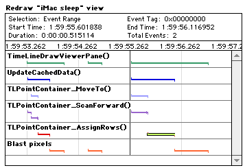
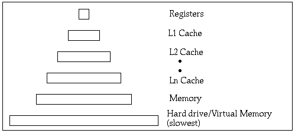
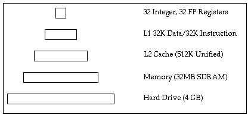
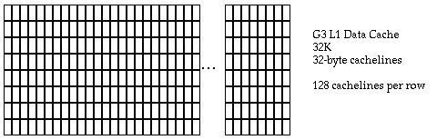
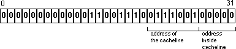
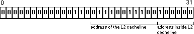
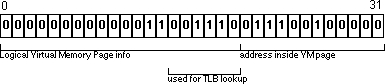

IntroductionThe first step to optimizing your application is to define your goals. Are you trying to improve overall performance of the application, or are their specific features in the application that are critical enough to need separate performance tuning? Is there a minimum acceptable performance level? How can it be measured? The more detail you can put into your goals, the easier it will be to determine how to improve your application. When defining your goals, you need to determine your target platforms. An iMac with 32 megabytes of memory will behave significantly differently than PowerMac G3 with 256 megabytes of memory. You should determine at least one low-end and one high-end configuration, and use these configurations in all of your performance-tuning efforts. Programmers are routinely bad at guessing where the bottlenecks are in their code. While you should be thinking about optimization during the design process, you will want to focus your optimization efforts on the sections of code that contribute the largest amount to your total execution time. So, the next step in optimizing your code is to instrument your code and generate data that measures the execution of your code. Later on, we'll cover some of the tools that are available, and discuss when each might be useful. After you've determined the bottlenecks in your code, the next step is to analyze your accumulated data and determine exactly why that particular code is slow. It might be slow because it is calling the operating system, or it could be an incorrect choice of algorithms, or even poorly generated assembly code. Understanding the exact behavior of your code is critical to changing the code correctly. Low-hanging fruit are simple flaws in the code that can provide immediate performance improvements if repaired. One common example here would be making multiple system calls when only a single set of calls is necessary. This could be setting QuickDraw port variables inside a loop, or it could simply be accidentally calling the same function twice. After this, the next major place to optimize your code is in the algorithms. This technote covers both Macintosh hardware and Mac OS technologies, so that you can understand how different algorithms may be affected by the underlying system. Memory management plays a key role in any algorithms you choose to implement in your code. Good memory management in an application can often mean orders of magnitude in performance. Parallelism is becoming more common in modern computer architectures. With multiprocessor Power Macintoshes already in the marketplace, and Power Macintoshes with AltiVec shipping in the future, you should look at ways to exploit parallelism in your algorithms. Finally, if the application performance still suffers, specific functions can be hand-optimized in C or assembly language to produce more efficient code. One golden rule of optimization is to hide the work where the user doesn't notice it. For example, if the user is not currently performing any actions, your code could precalculate data that may be used in the future. This significantly reduces the time required to actually perform the task. For example, many chess programs are computing their next move while waiting for the player to decide on their move. This significantly reduces the perceived time the computer takes to make a move. This technote describes techniques and algorithms without regard to other considerations, such as flexibility in design, ease of coding, ease of debugging, and so on. As such, they may be inappropriate except in areas of the application where performance is most critical. Analysis ToolsAs described above, it is critical to analyze your application to determine exactly where your program is spending the majority of its time. It is also important to understand exactly why your application is spending its time in that section of the code. Why is almost more important than where, because it will suggest the changes required to improve the code. With this in mind, let's look at some of the tools that are available, and their best uses. Metrowerks ProfilerCodeWarrior ships with a built-in profiling package that makes it simple to profile your code. Just turn on Profiling in the Project options, make a couple of simple changes to your code, and compile. The Metrowerks Profiler provides a summary of all of the calls in your application, how many times they were called, and the total amount of time spent in each call. It also keeps track of the shortest and longest times each function call was made. This is a good tool for getting an overall sense of where your application is spending its time. The summary information can quickly give you the top 5 or 10 functions where the application is spending most of its time.
The Metrowerks Profiler doesn't give you any information on how much time you are spending inside the operating system, nor does it really provide the context in which the function calls were made. That is, you can tell that Still, this profiler is an excellent place to start when looking to optimize your application. Instrumentation LibraryApple ships a complete SDK that allows you to wire up any application to log trace events. These trace events are stored in a file that can be parsed by the Instrumentation Viewer, and displayed in a number of different formats. In addition to summary information, you can also see a time-based progression that shows any subset of the events you wish to see. The typical way that this is used is to log a trace event at the beginning and end of a function. The instrumentation viewer translates this into a picture that shows the exact time spent in that function.  Figure 1 - Logging a trace event One advantage this mechanism has is that you can see exactly when or where events certain events took place in relation to others. For example, you could see exactly how long a function spends before calling another function, then see how long it takes when that function returns. This gives us more detailed information on exactly where each function spends its time, rather than a simple summary. Other types of events can be logged as well. For example, in addition to start and stop events, you can log middle events at various points. This is useful for functions that are easily broken into different sections. This allows each section of the function to be timed separately. In addition to time information, an application can also log its own numeric information. For example, a memory allocator could log the amount of memory requested by each call. This would allow additional analysis to be performed to determine the frequency of different memory requests. All this flexibility comes with some cost. It takes additional effort to set up the Instrumentation Profiler, because the support is not automatically in the compiler. Generally speaking, this can be done by running a tool (MrPlus) on an existing binary, and having it instrument a list of CFM imports or exports. This can also be done by directly adding code to your application, which is something that will have to be done in any case to obtain more sophisticated information. In short, the instrumentation library is particularly useful once you see where your hot spots are, because you can then drill down and analyze the hot spot in detail, and determine exactly what is being called (in the OS or in your own code), how often, and for how long. The instrumentation library is available on the Apple SDK web page.
4PMThe 604 and G3 processors include performance-monitoring features that allow an application to record statistics about its execution. Similarly, the MPC106 PCI controller used on the iMac and 1999 G3 models can also monitor and log detailed performance information. 4PM is a program and a shared library that allows an application to monitor a set of performance statistics. Most of these performance statistics are related to processor-specific features, such as cache misses or PCI performance. As we'll see when we talk about memory issues, some of these are crucial things to consider to get the fastest possible applications. While 4PM can be used to examine the overall performance, the shared library adds the capability to selectively start and stop the monitor functions from within your application. So, if you've used the Instrumentation Library to determine the hot spots inside your application, and it isn't readily obvious why your code is running slower than normal, 4PM could be used to provide additional details on how your code is executing. 4PM isn't a great tool for examining the application as a whole, but it can provide valuable information to understanding why a section of code is running poorly. SIM_G4Motorola has created a cycle-accurate simulator of the G4 processor that can test the execution of a block of code under different starting conditions. For example, you could test a snippet of code with both hot and cold caches and compare the performance characteristics. SIM_G4 works by creating a trace file using tracing features on the PowerPC processor. This trace file is imported into SIM_G4, and then those instructions can be simulated to give you a representation of how your code passed through the various processor pipeline stages. This tool is particularly useful for understanding how your instructions are scheduled and executed. As such, it is essential for scheduling assembly code to run on the G4 processor. The G4 is different enough from the earlier processors that scheduling for the G4 may not transfer back to the earlier processors. So, while this tool is useful, it will not solve all your problems. Detailed information about using SIM_G4 is available on the AltiVec web page. SIM_G4 is only made available as part of the Apple Developer seeding program. Build Your Own ToolsOccasionally, you'll find that the existing tools don't provide enough details on what is actually happening in a program. In those cases, it is valuable to design your own tools to accumulate data on the operation of your code. When designing any subsystem of your code, you should think about the types of information you need to understand the operation of that subsystem. Importantly, this information serves a second purpose: debugging that section of the code when there is a problem.
While any specifics are up to the individual application, the most common thing to log is state changes and parameters that were passed to that code. Note that simple state changes and parameters are easy to log with Instrumentation Library; you only need to write your own logging for complex systems. The Macintosh ArchitecturePowerPC processors are very efficient at processing data, so much so that memory, not the processor, is often the bottleneck in Mac OS applications. Slow memory accesses can completely stall the processor so that little work is being performed. Code that exhibits poor memory characteristics will run at speeds no faster than main memory or, even worse, at the speed of virtual memory reading from a hard disk. Clearly, allocation and utilization of memory are critical to achieving the best possible performance in an application. Programming in a high-level language hides the complexities of the memory subsystems on modern computers, in order to make it easier to write applications. Unfortunately, this is not an advantage when doing performance tuning. Understanding exactly how the memory system works is key to writing code that will work with the memory system rather than against it. To understand this, we're going to discuss the architecture of the Mac in detail. We'll first introduce some common architectural concepts; the following section will cover the Macintosh in detail. This technote can only give a brief introduction to computer architectures; for a more detailed discussion, see the References. Most computer programs tend to exhibit patterns of memory accesses, which is usually referred to as locality. Spatial Locality refers to memory accesses that appear adjacent to an access you just completed; this is common when reading different pieces of data from a C struct. Temporal locality refers to multiple memory accesses to the same section of memory; in other words, if you just read something from memory, you are likely to read it again in the near future. Modern computer architectures use a hierarchical memory model to take advantage of spatial and temporal locality. This model is built on caches. A cache is a smaller block of memory that can be accessed faster than the level it sits on top of. When a block of memory is loaded from the lower levels of the hierarchy, it is copied into the cache. Future accesses to the same memory will retrieve the data from the cache, which means the processor is less likely to stall waiting for something to be fetched from memory. Processors are increasing in speed faster than memory technologies, so multiple levels of cache are becoming more common.  Figure 2 - Memory hierarchy When the block of data is not available in a particular level of memory, that is known as a cache miss. A cache miss is actually slower than the original transaction would have been in a single-level memory system. Clearly, to take best advantage of a cache, you want to reduce the number of cache misses by taking advantage of locality in your application. Some areas of memory can be marked uncached so that the processor will always fetch them from main memory. This can sometimes be very useful when the data is infrequently accessed. Caches can be designed in a number of different ways, so we need to discuss some of the parameters that affect a cache's operations. These include:
Increasing the size of the cache increases the probability that previously accessed data will still be in the cache the next time the processor attempts to access it. Caches are organized into blocks of data, called cachelines. When the processor executes a load instruction, it must fetch one or more cachelines of data in order to fill the request. Cachelines are generally larger than the size of the processor's registers; they need to be large enough to take advantage of spatial locality without taxing the lower levels of the memory subsystem. Set associativity describes where a new cacheline can be stored in the cache. In a full-associative cache, a new cacheline can be stored into any available cacheline inside the cache. Most processor caches are not fully associative because of the small amount of time available to search such a cache. An n-way associative cache means that the cacheline has n locations that it could theoretically be placed inside the cache. For example, an eight-way associative cache means that any particular block of memory can only be placed in one of eight different cache blocks inside the cache. We'll discuss exactly how this works later on when we discuss the PowerPC processor. If there are no empty cachelines available when the processor attempts to load a new cacheline, one of the current cachelines must be thrown out. This is known as a replacement strategy. Most processors use a least-recently used (LRU) strategy, but others are possible. When the processor wants to modify the data stored inside a cacheline, the write-policy determines exactly how this write is performed. A write-through cache writes the data both into the cacheline and into the lower levels of the memory subsystem. The cacheline and memory will always stay in sync; they are said to be cache coherent. If that cacheline must be discarded to make room for newer data, then the processor doesn't need to do any additional work. A copy-back cache defers writes until that block is needed for newer data. When the block is removed from the cache, it is written out to memory. Copy-back caches are generally faster, but require additional synchronization if multiple processors attempt to access the same block of memory. If a processor attempts to access a cacheline of memory held by another processor, it must retrieve the modified data and not the original cacheline from main memory. This may require the cacheline to be written back to main memory, or the processors may be able to communicate directly with one another. A Look at the iMacTo put this in perspective, we'll examine the iMac/333 in detail. Although ultimately this information will be dated as the Macintosh continues to evolve, it is useful to look at a specific example and how its memory system is architected. For all Macintoshes, the best way to understand the machine is to read the developer note for the specific machine you are targeting.  Figure 3 - Memory Registers RegistersThe G3 processor has 32 integer and 32 floating point registers. Generally, any value stored in a register is immediately available to instructions executed by the processor, making this the fastest memory subsystem on the iMac. Clearly, anything that will be accessed repeatedly should stay in a register if possible. Register allocation is usually controlled by the compiler, but the source code can include hints as to what should be placed in a register. For crucial sections of code, assembly language may be able to beat the register allocation performed by the compiler. L1 CacheThe L1 caches are located inside the G3 processor, and any register can be loaded from the L1 cache in two processor cycles. Importantly, multiple load instructions can be pipelined for an overall throughput of 1 load per cycle. In other words, if an application knows that a piece of data is in the cache, it can dispatch a load and expect the data to be there two cycles later. The L1 cache is actually two separate caches: 32K for data and 32K for instructions. Each cache is eight-way associative with 32 byte cachelines. This means that effectively there are eight 4K rows, which are split into 128 different cachelines.  Figure 4 - L1 cachelines Whenever a memory access is made, the bottom 12 bits of the address determine exactly where to look in the cache. Of these 12 bits, the top 7 bits [20..26] determine which column to examine, and the bottom 5 bits [27..31] determine which part of the cacheline to read into the register.  Figure 5 - Memory access When a memory access is made, the specific column is searched in all eight rows simultaneously to see if the required data is already in the cache. If the data isn't in one of those cachelines, then one of those cachelines is flushed out to the L2 cache (using a pseudo-LRU algorithm), and the new data will be loaded into that cacheline. L2 CacheThe L2 cache on the iMac/333 is a 512K, two-way set associative cache with 64 byte cachelines, for a total of 8,192 entries. Typically, the access time to the L2 cache is about 10 to 15 cycles. Inside the L2 cache, bits 14 through 25 of the address will be used to determine which column can hold our data. Because the rows are much longer, there is less chance of two transactions overlapping inside the L2 cache; this is good because collisions will tend to flush useful data outside of the cache sooner.  Figure 6 - L2 cache The L2 cache holds both instructions and data, so both may be fighting for resources - but only when the code is large enough to spill outside the L1 cache. Main MemoryWhen the information isn't available inside the L2 cache, then we must fetch it from main memory. Main memory accesses usually take about twice as long as accesses inside the L2 cache. The memory used in the iMac is SDRAM, which is organized so that adjacent reads from that memory in a short period of time will be more efficient than completely random reads. The same code transformations that improve caching will also help to maximize SDRAM performance. Virtual MemoryUp to this point, we've ignored virtual memory, so now we'll look at it in detail. Mac OS organizes virtual memory into pages that are 4K in size. A page table is stored in main memory that maps logical pages to the actual physical pages in memory. When a page is requested that is not presently in memory, it is loaded from disk, possibly ejecting another page back to disk. Virtual memory can be seen to act exactly like a cache. Given that the page maps are stored in main memory, it might appear that each load and store instruction is going to cause multiple memory transactions - first to read the page table, and then to fetch the actual data. To avoid this, the G3 processor keeps a cache of the most recent page accesses. This cache is known as the Translation Lookaside Buffers, or TLB. This cache is much smaller than the ones we saw for the L1 and L2 caches; a 128-entry, two-way set associative cache. Bits 14 through 19 of the address are used to look up the entries in the TLB.  Figure 7 - Translation Lookaside Buffers A TLB miss will cause a significant penalty in accessing that block of memory. Worse, if you repeatedly access pages that are not located in memory, repeated page faults will slow the Macintosh down to the speed of the hard disk, about a million times slower than RAM accesses. Access StrategiesYou probably didn't want to know how the iMac's memory subsystems work; you really want to know how to write your application so that it accesses memory as quickly as possible. Clearly, the goal is to spend as much time working inside the L1 cache, where memory accesses are fast and predictable, and as little time as possible in the other memory subsystems. The good news is that we can apply most of our effort to optimizing the L1 cache performance; all the other layers will benefit from those optimizations automatically. Steps to optimize code performance:
AlignmentWhenever possible, all forms of data should be aligned to their natural size boundary. For example, a 32-bit long should have an address that is a multiple of 4. A 64-bit floating point double should be aligned to an 8-byte address. AltiVec registers should be aligned to a 16-byte boundary. If an application doesn't properly align a variable, it will take a penalty every time it executes a load or store on that section of memory. For integer instructions, the penalty is one cycle. Remember, floating point doubles; the G3 processor does not handle alignment in hardware. Instead, an exception occurs and the alignment is handled in software. This works correctly, but at a severe performance penalty, and should always be avoided. AltiVec registers can only be loaded or stored on aligned boundaries. When an load or store generated for one of the AltiVec registers is performed, the bottom four bits of the address are ignored completely. This ensures that all loads and stores are aligned in memory, but requires the programmer to perform the alignment manually. If you need to read or write misaligned data using the altivec registers, consult the Apple AltiVec web page or the AltiVec Programming Environments Manual. While aligned loads and stores will always fall inside a cacheline, misaligned data can straddle two different cache lines, or even two different virtual memory pages. This can result in additional performance penalties as more data is loaded into the caches or from disk. Whenever possible, align both your reads and writes. If you have to choose one to align first, align the reads, since most code stalls on reads, not writes. If you allocate a data structure using PowerPC alignment conventions, then the structure will automatically be padded correctly to maintain proper alignment. However, if your structure includes doubles or vector registers, at least one must appear at the beginning of the struct to maintain proper alignment.
The standard C function
Choosing Stride Values and a Memory Access PatternThe stride is the offset between consecutive memory accesses in your code. A good rule of thumb is to choose the natural length of the item being fetched (a unit stride). For example, the unit stride of an array of If you can't choose a unit stride, you should try to choose a stride that is no larger than a cacheline. Once you choose a larger stride, you may skip cachelines, leaving a percentage of the cache unused. Larger stride values that are powers of 2 will use a dramatically smaller portion of the cache. For example, look back at the diagram of the L1 cache. If we chose a stride of 4096, we would be walking vertically through the cache, using a total of 8 cachelines in the L1 cache. This would actually use less than 1% of the L1 cache, and 2% of the L2 cache. However a stride value of 4092, only 4 bytes lower, will use the entire cache. However, large strides are always bad because they will cause many virtual memory pages to be touched, resulting in many page faults. This technote comes with an application named Cacheline Optimizer. Given a stride value, it will simulate the cache utilization for the L1 and L2 caches on an iMac, as well as giving an approximate idea of the TLB usage. It gives the percentage utilization as well as how many iterations before you will begin to evict data from the cache. You should optimize your cache utilization for the data that is used most frequently. For example, let's assume we've got an array of data records on which we need to search and perform operations.
This code has a stride of 32 bytes; we actually load a cacheline every time we iterate on the search loop. Unless we frequently hit inside the loop, we are actually wasting most of the cacheline on unused data. Instead, this structure could be transformed into a pair of arrays, one for the keys and one for the data.
This results in no wasted space in the cache; we only load data into the cache when we successfully find a key. A test on the code above showed that the second set of search code executes in roughly 60% of the time of the first test. Another common example is multidimensional arrays. Array accesses should always start with the innermost dimension, working outwards. For example, the following array could be accessed in two different ways:
In the first case, we have a unit stride, with the best possible cache utilization. The second case gives us a power of 2 stride, giving extremely poor L1 and L2 cache utilization. In this particular case, the first set of code will run about five times faster than the second. High Performance Computing (see References) discusses a number of access patterns for optimizing cache utilization of arrays and is a useful place to look for more ideas on transforming your data. When talking about data, we can't ignore lookup tables. Lookup tables used to be a very efficient way to perform computations, but the processors have become much faster than the memory systems, so it if often faster to do the calculations than to rely on a lookup table. Lookup tables are generally only efficient for small tables that are accessed extremely frequently inside a tight inner loop. Large tables, or tables that are accessed infrequently will only result in displacing other data from the caches. Temporal LocalityWe've seen how choosing a good stride value improves the spatial locality of a block of code. However, temporal locality is equally important. A block of code should work on data in relatively small chunks, and work on those chunks for as long as possible before moving on to other data. Ideally, those chunks should fit inside the L1 cache, to absolutely minimize the time spent operating on the data. For example, the following code performs three different functions on our data structure.
This code is inefficient because the function walks an eight-megabyte block of data. This is large enough to completely fill the L1 and L2 caches. Since we walk each function separately, this code will completely reload the L1 and L2 caches in each loop. Under cramped memory conditions, it will also thrash the virtual memory system as well. Instead, this code should perform all three functions on a block of data before moving on to the next one.
This will not evict any data from the L1 cache until all three functions have been executed, resulting in about 1/3 the memory accesses of the first example.
The example above shows no dependencies in the code. Most real-world examples exhibit dependencies between different blocks of code. The goal is to calculate as far ahead as possible without evicting useful data out of the L1 cache. For example, if A safe number is generally half the size of the L1 cache; this allows for other data and global variables to have space in the cache. Optimizing Virtual Memory UsageIf you optimize your data to fit in the L1 caches, you have already optimized your code to work efficiently with the Mac OS virtual memory system. For example, a block of code executing on a four-byte stride will only incur one page fault every 1,024 iterations. In many cases you can provide additional hints to the Mac OS to further improve your virtual memory performance. Starting in Mac OS 8.1, there are a set of functions that allow you to prepage VM pages into and out of memory. Complete documentation is in Technote 1121, "Mac OS 8.1", but to summarize:
For example, let's revisit our previous example. We know the code is about to walk an eight-megabyte block of memory linearly. In the worst case, all of our data is currently on disk and we'd take 2,048 page faults to bring in this data and operate on it. Disk and file system overhead will make this operation slow, even though we optimized our memory accesses appropriately. However, we know we're going to walk the entire block, so we can prepage the information in.
This code hints to the operating system, allowing these pages to be read into memory in much larger chunks. For a piece of code similar to the above test, this roughly doubled the VM performance. Importantly, adding this function call is only useful if the data has likely been previously paged to disk; otherwise, this just adds a small amount of overhead to the function.
Similarly, if the application has modified a large chunk of data, it can call
Finally, if the application has a chunk of data that doesn't need to be stored to disk (because the entire page of data will be recreated next time it is needed), then the pages can be invalided via Working With the CacheThe PowerPC processor has a number of instructions that allow a program to hint to the processor about its cache utilization, much like the function calls we just described for virtual memory. The G4 processor has more advanced streaming instructions that allow even further optimizations to be made. This note will only cover the instructions that are available on the G3 processor; information on the cache streaming architecture is available on Apple's AltiVec web page. Hinting to the processor allows it to use spare memory bandwidth to prefetch new data before it is needed by the processor. Under the best circumstances, where computations and loading are balanced perfectly, this can result in a doubling of the actual performance of your code. Compilers will not automatically emit these instructions; you need either to write assembly language or use special compiler intrinsics to add these instructions to your code.
The dcbt instruction hints to the processor that you will be using information from a particular block of memory in the near future. If the processor has spare memory bandwidth, it can use them to fetch this data so that it is ready immediately when you need it. This instruction will not cause page faults or other exceptions.
If we look at our previous example, we found that our record fit exactly into a cacheline. If our records were aligned to a cache boundary, we could use a
This instruction is only useful when the number of calculations is large enough that there are idle memory cycles and when our data is usually not already in the L1 cache. For something like a simple memory to memory copy, there are no calculations to overlap with the
Cache touch instructions have a very significant effect on the G4 processors, often doubling the available memory bandwidth.
The Beyond being the most efficient way to clear cacheable memory, this instruction offers another tangible benefit. If a block of code is going to completely overwrite a cacheline of data, then it should explicitly clear that cacheline before filling it. For example, the following code fills a one-megabyte block of memory with data.
When the first write is done into a cacheline, the write stalls until the cacheline is loaded from main memory. This read is completely unnecessary since the code is going to overwrite the entire contents of the cacheline. For our one-megabyte record, this is 32,768 loads from memory that we didn't need to make!
Instead, we could write this code to use the
This code explicitly clears the cacheline and then fills it with the new data. By clearing it, we've eliminated a significant amount of load bandwidth, in some cases more than doubling the overall throughput in memory.
The
The
Explicitly flushing data that won't be used in the near future makes those cachelines available for other incoming data. This might prevent useful data from being purged from the caches by mistake. Like the
The
Let's say we had a piece of code that is going to recalculate a chunk of data every time could use Hidden Ways Applications Touch MemoryMost applications access memory in places the programmers never realized. Compilers often generate unnecessary loads and stores to keep certain variables synchronized between a register and main memory. Global variables can also add additional data into the cache. This section discusses a few ways that this can result and suggests methods to avoid it. Global variables are stored in the data portion of a shared library and are accessed via a lookup table (known as the TOC). Whenever an application accesses a global variable, it must first look up the address of that variable in the TOC. So, any global is accessed with at least two load instructions. If a global is accessed multiple times in a function, the compiler may cache the global's address in a register. However, this will leave this register unavailable for other computations. Let's put this in perspective. A function that accesses eight global variables may use anywhere from eight to sixteen registers to hold global data, trading off additional registers for fewer reloads of the address. The large number of registers being used means that more registers must be saved and restored when entering and exiting the function. And finally, all of the TOC lookups mean additional cachelines of data being loaded into the L1 cache. For the above code, the worse case would be where each TOC entry is in a different cacheline.
Globals that are declared as There are a few ways that an application can work around the above problem. The easiest is to declare a related set of globals into a single struct. This causes all of the globals to share a single TOC entry, and also allocates the data adjacent in memory, which improves the cacheability of the global information. Because they share a single TOC entry, a single TOC address lookup can be used to the entire set of globals, with no additional penalties over the standard case in the compiler. Using our example above, 8 globals would fit into 9 registers; one that holds the address retrieved from the TOC, and 8 to hold the actual globals. This model of using a single address to look up a set of globals is close to the model used for globals used on Windows, so those of you creating cross-platform code should find that this gives you good performance. Another important consideration is the scoping of the global. If the global is only used in a single function, or inside a single implementation file, be sure to scope it as a static variable inside the function or file. This offers the compiler additional information it can use when optimizing the code. Even with both of these mechanisms being used, many accesses to globals will still generate load and store instructions, even when the data hasn't changed in memory. This is known as aliasing; the compiler can't always determine if two different pointers aren't pointing at the same memory, so it gives up and assumes memory is accurate and the register is not. By creating a local variable, and assigning the global's value to it, you explicitly tell the compiler that this variable is scoped for a given function and it won't change. If you do modify the global, you can copy the value back at the end of the function. Obviously this only works if the function doesn't call another function that will change the value of the global. Like most optimizations, this is best used inside a tight inner loop, where extraneous memory accesses to a single memory location are just wasted cycles. These same techniques can be applied in other places as well. Values stored inside a structure or C++ class, or anything referenced via a pointer, will suffer the same aliasing problems as a global variable. Caching frequently used items into local variables explicitly tells the compiler and allow it to produce better code. Always scope variables as tightly as possible in order to let the compiler aggressively schedule register usage, preventing unnecessary registers from being saved and restored to the stack. When programming a function in this manner, it is useful to think of the function as a machine that takes a bunch of data, stores it in registers, crunches everything inside registers, and then stores it out to memory. While doing calculations, it isn't touching memory, offering more bandwidth to other parts of the Mac. PCI MemoryPCI memory transactions are much slower than those going to main memory, so applications which write data to PCI must be optimized more closely than those that touch main memory. The iMac ships with a 33mhz PCI bus, while the '99 G3 and G4 systems ship with 66mhz PCI and AGP. When writing data over PCI, we want to reduce PCI transaction overhead and maximize the number of PCI cycles spent writing data. Cacheable PCI memory works identically to main memory; the only difference is the slower time to burst cache lines across PCI bus. Because of this, all of the guidelines for L1 and L2 cache management are more critical, because code that thrashes the L1 and L2 caches will be reduced to the speed of PCI reads and writes. However, many devices on PCI are non-cacheable and require additional work on the part of the programmer. One common case is a video frame buffer, which must be non-cacheable in order to ensure that pixel updates happen immediately. If you are writing data to non-cacheable PCI memory, you should follow the following guidelines:
Misalignment penalties when writing to PCI are extremely high, and it is always worth spending additional instructions to explicitly align a block of data before posting it over PCI. One easy way to do this is to create a buffer on the stack and write your unaligned data into the buffer. Then, write this buffer over PCI using double or vector registers. This buffer could be aligned with caches, and explicitly cleared and invalided, as discussed in the caching section. When working on a frame buffer, don't write one- or two-byte quantities if you can gather larger sets of writes - a one- or two-byte transaction takes just as long as writing out a four-byte word. If you can, round all your writes to four-byte boundary (minimum) and write out longs. As an example, the worse case would be code that alternates writing one byte, and then skipping one byte. If we write each byte separately, we are effectively writing to each four-byte block twice. If we round each byte to a four-byte boundary on either side and gather adjacent writes, we immediately half the number of PCI data writes we are making to the buffer. This requires the intermediate unchanged pixels to be coherent with what is presently stored in PCI memory. In actuality, writing four bytes at a time does not offer the best performance. When larger chunks of data are being written, code should use the floating point registers to move 64 bits at a time. This reduces the PCI transaction overhead, resulting in a 50% gain in speed over writing longs. On machines with AltiVec, writing aligned data with vector registers will result in speeds more than twice that of an equivalent set of integer loads and stores. MultiprocessingMultiprocessing adds an entirely new set of issues to worry about. On the positive side, each processor has its own L1 caches, which allow larger data sets to be stored in L1 cache simultaneously. However, multiple processors will share L2 cache and main memory, which means the processors are competing for a sparse amount of bandwidth. If your code has already been optimized to make efficient use of the L1 cache, then the load on the L2 and memory subsystems will be lower and your application will automatically have better MP performance. When possible, a multithreaded application should never write to the same cacheline of data from multiple preemptive tasks simultaneously. While this will give acceptable performance on single processor systems, a multiprocessor system will cause a lot of overhead keeping cache coherency between the processors. This overhead is reduced on the G4 processor, but is still worth avoiding. Instead, divide your work into multiple sections that don't overlap in memory and give each section to a thread. Each section should follow the rules for spatial and temporal locality. Mac OS Optimization StrategiesHaving examined the memory system on the current Macintoshes and how it affects the organization of your data, we will now turn to the discussion of how to optimize your code to work with the Mac OS. Applications can't change the code in the Mac OS, but they can change how they call the Mac OS. An understanding of how different components of the Mac OS operate will help determine the correct algorithms and strategies to use in your code. Basic OS OptimizationsDon't spend a lot of time rewriting basic operations, such as memory moves or string routines. Instead, you should rely on the low-level operating system services or
Similarly, you should avoid embedding any runtime libraries directly into your application binary; instead, link to So, initially, when you need a service, you should determine whether the system already has a function that implements that feature. If it does, you should use it, and only replace it when you absolutely must.
When might you need to replace a routine? Let's look at an example.
If 90% of your Generally speaking, the easiest way to avoid system overhead is to make fewer system calls on larger chunks of data. We'll see this in a few places throughout the rest of this section. Finally, while many pieces of the Mac OS run natively, other functions are still implemented in 68K code. 68K code runs significantly slower than PowerPC code. The 68K emulator tends to fill the L1 and L2 caches with data, evicting useful data out of the caches. Optimizing the Event LoopOne place applications often lose time is inside their event loop. Every time you call Studies have shown most users expect the frontmost window to be the most responsive, and to complete work faster. For example, the current Finder uses significantly more time when the frontmost window is a Copy progress dialog; the user is waiting for this copy to complete. Applications should adopt the following guidelines:
Starting with Mac OS 8.6, preemptive tasking is available to all applications, all of the time, and is accessed through improvements to the Multiprocessor API. In fact, the entire Mac OS cooperative environment is now run as a single preemptive task, and is no longer tied to a specific processor. Preemptive tasks are still limited in what they are allowed to call; calling any 68K code or most operating system functions is not allowed, making them useful primarily for computational activities. Cooperative threads are also useful in this regard, but they can also take advantage of toolbox calls.
When
If you are performing calculations inside your
This code always attempts to perform calculations at least once through each event loop, calling out to cooperative threads as necessary. Once all work is completed or an event comes in, the code falls through and calls
The event loop dynamically alters the time it uses for sleeping and waking based on whether it is in the foreground, whether it has any cooperative work to complete, and whether it has sent or received any apple events. For this code to work properly,
Using functions to calculate the work and sleep intervals allows complete customization of the event loop. For example, applications could dynamically increase the work interval and decrease the sleep interval based on the number of computational tasks they are currently performing. Games will want to maximize the amount of time used for work, and spend most of their time in Applications that don't need time should sleep for as long as possible. This provides the maximum amount of time to other applications, and also allows preemptive tasks to get a larger share of the processor. If no tasks need time on the machine, the processor can go to sleep, conserving power on portable systems. Applications with animated displays (e.g., a blinking caret in a text editing application) should choose a sleep value that permits them to update their graphics often enough. See Inside Macintosh: Macintosh Toolbox Essentials, p. 2-86. Memory ManagerWe've already talked about some of the hidden costs of accessing memory. However, allocating and deallocating memory can also take a significant amount of time. Macintosh heaps become inefficient when large number of memory blocks are allocated on them. The memory manager has to walk the heap and move blocks around to make room for new allocations, causing large amounts of memory thrashing.
When you need to allocate a large number of small objects, you should allocate small number of handles or pointers, and suballocate all of your other objects inside that block. The CodeWarrior MSL libraries use a suballocator mechanism for C++
Be wary when allocating system data structures. Many items allocated by the operating system are composed of multiple objects, each of which is a separate pointer or handle block. For example, a FilesFile system optimizations are often overlooked, and are a critical way to make a different in application performance. A few simple optimizations can double or triple the speed of your file system code. Technote FL16, "File Manager Performance and Caching", discusses file system performance in detail; this note will touch on some of the important points found in that note.
The file system introduces a fair amount of overhead to retrieve data from a file, so the key to improving file system performance is to request data in large, aligned chunks. Reading individual shorts, ints and floats directly from the file system is highly inefficient. A better solution is to buffer your file I/O. Read an 8K chunk from the file into a block of RAM, and then read the individual bytes from the buffer. This reduces the number of times the application accesses the file system, resulting in dramatic system performance. Included with this technote is a piece of code, CBuffFileStream, that implements a buffered file system on top of the Mac OS file system. In order to maximize the benefits of buffered file I/O, you must organize your data so that it can be read from the file sequentially. Random access reads and writes will still work, but at a slight performance penalty. In a sense, your buffer is a cache that holds recently accessed data; accessing data with similar spatial locality will be faster than random accessed memory. Organizing the data can be done by reordering the file, or it can be done by generating a separate index to the file. This index can be sorted into a sequential order that can be used by the loading code to bring in all of the individual pieces of data. Assembling the data at the other end of the transaction will be more complex in this case, however. Once the data has been reorganized sequentially, increasing the size of the read-ahead buffer will further improve performance. The application can also prefetch the next buffer of data asynchronously, since it knows that it will be using this data. Under the right conditions, where computations and file loading are roughly equal, this can double the performance of your application. Also, when loading large files, you are not likely to be rereading that data immediately. You should use the parameter block-based calls and hint to the file system not to cache those blocks. This will save time (because the file system doesn't make an extra copy of the data) and will also keep useful data inside the disk cache. ResourcesResources are a critical part of any Macintosh application, and are thus a crucial topic to discuss when optimizing a Macintosh application. Before we discuss ways to tune performance of resources, it is useful to discuss the mechanics of the resource manager. Resource forks are just a file with a very specific format. Resources are just chunks of data with a specific type and ID. All of the information about the resources in a particular file are stored in an index, known as the resource map. An application can have multiple resource files opened at once. The resource files are kept in the order that they will be searched; this is known as the resource chain.
When an application makes a call to Clearly, if you have a lot of resource files open, this searching process could take a long time. Worse, searching large resource maps will flush your own data from the caches. Clearly, we want to do two things; first, make searching as efficient as possible, and second, minimize the actual amount of disk access the resource manager has to make. Here are some immediate guidelines for optimizing resource usage in an application:
If your application's resource fork has frequently used resources, you should set the preload and locked flags on those resources. They will be loaded low into the heap when the application is first launched and will always be available when the application needs them. Since users expect a small delay when the application is launched, this resource time is hidden from the user.
You should never release any resource you expect to use again in the near future. When you call Similarly, opening a resource fork is a costly operation, with multiple file reads and a lot of preparation work on the resource map in RAM. You should avoid closing any resource fork that you may use in the near future.
As mentioned earlier, searching the resource chain is a lengthy operation that touches a significant amount of data. If you know the specific resource file, you should explicitly set the resource file and use a shallow search of that file (e.g., Similarly, you don't want to put too many resources into a single file. A resource fork cannot be larger than 16 megabytes in size. In addition, the absolute maximum is 2,727 resources; the actual maximum will vary based on the number of different resource types in the fork. All resource manager searches are performed linearly, so the more resources there are in a file, the longer it will take to search that fork for a resource. On the other hand, putting too few resources into a file can result in many more forks being open on the machine. Mac OS can only have a limited numbers of files open at one time. Also, if you make a call to the regular resource manager routines, it will search the entire resource chain. Custom resources should be created as a single complex resource rather than using a large number of smaller associated resources. This will improve searching, both because the list of resources is smaller and because fewer searches are being executed. Optimizing Resource Fork LayoutThe resource fork format is flexible and documented, and this allows some additional optimizations to be made. The Resource Manager organizes the data into three basic sections: the resource header, which holds the locations of the other two forks, the resource map, which stores information on all resources in the fork, and the resource data, which contains all of the actual data. These sections are usually organized so that it is easy for the Resource Manager to modify the fork on disk. However, a fork that is expected to be read-only can be reorganized on disk to optimize opening and searching the fork. This provides significant benefits when those files are read off of slower media (e.g., CD-ROMs), but are always useful. In order to perform these optimizations, you need to have a profile of how frequently you load each resource, and which resources you load at the same time.
When the resource fork is opened, the header is read in, and then the system uses the offsets found there to read in the resource map. This results in multiple file-system reads to different parts of the file system cache. If the resource map immediately follows the header, then fewer file seeks are necessary and the resource fork can be prepared faster. As mentioned earlier, the resource map is searched linearly, first by resource type and then by name/resource ID. Resources that are loaded frequently should be sorted so that they appear at the beginning of the list; resources that are almost never used should be moved to the end of the search path. This will improve search times and reduce the effect the Resource Manager has on the cache. Finally, since resource data will be loaded into the file system caches, you can reorganize the data so that resources that are frequently used together are adjacent in the file (generally, in the same 512-byte block). While the first resource loaded will result in a file system call, the other resources will already be in the cache and load much faster. Resources that are infrequently used, and don't work with any other resources should be moved elsewhere in the file. This will improve the file cache utilization. QuickDrawMacintosh applications tend to have very detailed user interfaces, and thus spend a lot of time inside QuickDraw. This section discusses ways to improve QuickDraw performance and suggest places where bypassing QuickDraw may be more valuable. Optimizing QuickDraw is complicated by hardware acceleration and where your
All Macintoshes ship today ship with hardware-accelerated QuickDraw. However, most hardware accelerators can only accelerate calls when the images are being rendered directly into VRAM. Offscreen
However, this ignores the overhead of QuickDraw to get to the actual drawing code. When a QuickDraw call is made, a large complex structure is created that describes the blit. This structure includes any explicit parameters as well as implicit parameter information (usually, the current port and
Finally, copying data from system memory to VRAM is bottlenecked by the PCI bus. This tends to affect copying large
When an application needs to do sophisticated compositing, it is often better to do this drawing into an offscreen Custom blitters are an option, but think carefully before you really try to beat QuickDraw. Hardware accelerators will usually beat a custom blitter for any significantly sized blit. However, for small blits, the overhead of QuickDraw means that a specialized blitter can beat QuickDraw. "Large" and "small" can change depending on the version of the OS and the underlying graphics hardware, so they are left intentionally vague. For best results, you should compare QuickDraw and the custom blitter at runtime and choose whichever one is faster. When writing a blitter, you should read the memory section of this technote closely, since understanding the memory systems will be key to optimal blitter performance. In addition, the custom blitter should be as specialized as possible; the more general the blitter, the less likely it is that you'll be able to beat QuickDraw. QuickDraw 3D RAVE and OpenGLRAVE and OpenGL have less overhead than QuickDraw and are a good choice when speed is critical. Generally, commands are either dispatched immediately to the hardware or are buffered. Buffering usually allows more efficient utilization of PCI bandwidth. Technote 1125, "Building a 3D application that calls RAVE", covers RAVE optimizations in detail, but most 3D hardware-accelerated applications are limited by one of three major areas:
The pixel fill rate is a limitation of the 3D hardware. In general, this is a measure of the clock speed of the graphics processor and the number of pixels it can issue on each clock cycle. The larger the frame buffer gets, the more pixels will need to be filled. In other words, if pixel fill rate was the only bottleneck in an application, then rendering a 1280x960 buffer would take four times as long as rendering a 640x480 context. In general, once the pixel fill rate has been reached, there is little that can be done to improve the speed of the graphics engine. All state changes and geometry must be sent to the 3D accelerator over the PCI bus. Thus, the amount of bandwidth defines the upper limit on the number of polygons that can be passed across the hardware. Large state changes (such as loading new textures) will reduce the amount of bandwidth available for geometry. Finally, the graphics hardware needs to be configured differently for each graphics mode. In addition to the necessary bandwidth required to communicate a state change, there is usually a time delay for reconfiguring the hardware.
The fastest way to draw a piece of geometry is not to draw it at all. Rather than sending every polygon to the programming interface, you should use a higher-level algorithm to eliminate objects that aren't visible to the user. For example, QuickDraw 3D allows a bounding box to be specified for a piece of geometry; if the bounding box is inside the viewing area, then no other calculations need to be done for that entire geometry. Similarly, many games use BSP trees or portals to cull sections of the world. Not drawing a piece of geometry results in fewer vertices being passed to the hardware, and also may reduce or eliminate other state changes in the hardware. You should tailor the number of polygons used to draw an object to the size of the object in the scene. Rendering a fully detailed model in the distance may result in triangles that are smaller than a pixel in size. This is a waste of bandwidth; instead, a lower-detail geometry should be used. Similarly, creating geometry with shared vertices will also use bandwidth more efficiently. For example, sending 12 triangles to the hardware is normally 36 vertices worth of data. However, if those triangles are arranged in a strip (where every two triangles share an adjacent edge), then the entire strip can be specified with only 14 vertices, for a better than 2 to 1 savings in space. When possible, you should sort rendering based on the graphics mode being used. This will reduce the number of state changes being made in the hardware. The more time you spend in a particular mode, the less time you are spending changing the state, and the more time you are spending actually rendering polygons. Textures are a special form of state change that are worth discussing in more detail. Loading a texture onto the hardware is a significant drain on the available bandwidth. For example, if we assume that a vertex is 32 bytes, then loading a 256x256x32 bit texture is the equivalent of 8,192 vertices! In addition, there is usually a limited amount of VRAM available to hold textures, so textures will need to be removed from the card to make room for other textures. Like other state changes, sorting your polygon data based on the textures used will help to minimized the amount of times you change the texture. OpenGL uses a least-recently used (LRU) algorithm for determining which textures to throw out. If you use the same texture order every time you draw a frame, you'll actually get poor performance, because your textures are always being thrown out before you need them. Instead, alternate your texture rendering order so that every other frame is drawn backwards through the sort order.
When changing textures in GL, use Finally, if possible, make sure you are providing the textures to the hardware in a format they support natively. This eliminates any costly conversions to a native format.
Finally, Apple has implemented two extensions to OpenGL. Multitexturing allows a multi-pass rendering algorithm to be rendered in a single pass. This reduces the amount of PCI bandwidth required to render a polygon, and also uses the fill rate more efficiently. Similarly, compiled vertex arrays are a mechanism that allows the application to tell OpenGL that a vertex list is not going to change. This allows OpenGL to efficiently pack this information into the command buffer for rendering. Using compiled vertex arrays and NetworkingOptimizing network operations is covered in detail in Technote 1059, "On Improving Open Transport Network Server Performance." SoundThe key to optimizing sound code on the Macintosh is to optimize your sound formats to the hardware of the machine. If your sound doesn't directly match the sound hardware, the sound manager instantiates additional sound components to convert your sound to the correct hardware characteristics; this introduces latency into your sound playing as well as using additional CPU time. See Inside Macintosh:Sound, Chapter 5.
In order to reduce the latency of the sound being played back, you should optimize your buffers to the buffer size of the hardware. You can find out the native sample type and buffer size by creating a channel, playing a sound on it, and then calling
Time ManagerTime manager tasks are deferred by the virtual memory system so that page faults can be taken inside a task. If you can guarantee that both the data and code for a time manager task are held resident in memory, you can make your tasks run more efficiently and accurately. See Technote 1063, "Time Manager Addenda", for details. Optimizing C codeMost of the discussions in this technote have been algorithmic in nature: places where the choice of algorithm affects how you call the operating system or access memory. While algorithmic changes will get you the most significant improvements, additional improvements are possible by simple changes to the C code. These changes are often just hints giving the compiler additional information that allows it to emit more efficient code. These types of changes are most useful inside computation intensive bottlenecks, but can be useful in just about any C code. Scoping VariablesWhenever possible, scope variables as tightly as possible. Compilers perform lifetime analysis on every variable in order to allocate the actual PowerPC registers to the variables. Scoping a variable more tightly helps the compiler by allowing it to reuse the same registers for multiple local variables inside a function. Making a global variable static restricts it to a single source file or function. Either of these allows the compiler to perform additional optimizations on that global variable. And as mentioned earlier, temporarily assigning a static variable to a local variable further restricts the scoping, allowing the compiler to further improve the compiled code. Basic BlocksMost instruction scheduling is performed on basic blocks. A basic block is a set of instructions that are not interrupted by any branch instructions. A key goal in optimizing C code is to increase the size of the basic blocks so that the compiler has more instructions to schedule. Code CopyingCode copying is one way to increase the size of a basic block. It involves taking the same piece of code and copying it into multiple places inside the source. For example, let's assume I had the following code, where (b), (c), and (d) are relatively small code blocks.
Since d is a small block, copying it into both conditions of the if statement will increase the size of both basic blocks.
This type of operation is less useful when copying a large number of instructions, because it tends to add more cache overhead. Loop UnrollingLoop unrolling is a simple form of parallelism that both reduces the amount of loop overhead and increases the size of the basic block. Loop unrolling involves simply duplicating the inner loop multiple times. For example, take the following loop:
This loop is a perfect place to exploit parallelism because none of the results rely on the previous set of calculations. We can unroll this loop twice and get:
First, the loop overhead on this loop will be much smaller than regular loop. Second, we now have four sets of instructions that can be scheduled against each other. While one set of calculations may be stalled, another may be executed. Loop unrolling tends to avoid stalls caused by waiting on a particular instruction unit. Most of the benefits of unrolling a loop will be found on the first two iterations. Unrolling larger loops or loops with many local variables is often counterproductive. Because each variable is duplicated, excess variables may be written into main memory, significantly hindering performance. In addition, this can significantly increase the size of the code, resulting in more code needing to be loaded into the instruction cache. Note that loops that can be unrolled should also be examined for places to support vectorization or multiprocessing. When unrolling a loop, don't continuously increment pointers. Instead, use array accesses and a single increment instruction. This will result in a tighter loop and less unnecessary instructions. Eliminating BranchesAfter memory accesses, branches are the next most common place where the PowerPC will stall. Minimizing the number of branches in a code increases the size of basic blocks and reduces the opportunities for branch prediction penalties. First, the common path through the code should be as efficient as possible. Code that rarely executes should be placed at the end of the function, or in an entirely different function. This will prevent rare code from being prefetched into the instruction caches.
When possible, perform calculations without branching. For example, the
If this function were inlined, it would have two branches, which would break basic blocks and offer opportunities for mispredicted branches. However, this code can be implemented without branching. The following code is based on an assembly snippet from the PowerPC Compiler Writer's Guide:
This version of the code eliminates all branching and combines two adjacent basic blocks, resulting in more efficient code. Similarly, checking to see if a value falls within a range can be reduced to a single branch.
AltiVec offers compare and select instructions that offer greater flexibility in generating code. For a sequence of code, two different result vectors can be calculated (one for success and one for failure). A third vector is used to hold the results of a compare instruction. Finally, a select instruction uses the compare results to choose between the success and failure cases. In addition to the added parallelism, this code executes without any branches. For example, the following code combines a set of 16-bit source pixels with 16-bit destination pixels using compare and select. It uses the top bit of the 16-bit pixel as a mask. Wherever the bit is 1, we replace the destination pixel with the source. This code sets 8 pixels at a time without having to do any comparisons.
If you cannot eliminate a branch, place as many instructions as you can between the branch and the condition it is testing against. This ensures that no branch prediction will occur, eliminating any costly penalties for a mispredicted branch. PowerPC AssemblyA working knowledge of PowerPC assembly is useful when optimizing applications for Power Macintosh. While it is rarely essential for anything to be written in PowerPC instructions, it is always useful to disassemble the code generated by the compiler. SIM_G4 will also take the actual code being executed and provide you instruction-by-instruction details about how your code is executing. If you need that last 10% out of a particular function, then you might consider writing it directly in assembly language. Assembly language is also useful when you need to get at instructions that the compiler won't normally generate. The key to writing efficient PowerPC assembly language programs is to perform optimizations and use instruction sequences that the compiler will not normally generate. The following section describes a few useful code examples that the compilers will not generate. Also discussed are other areas you should consider when writing your own assembly functions. Before writing any assembly language code, you should read the appropriate processor manuals along with the PowerPC Compiler Writer's Guide. Special Load and Store InstructionsThe PowerPC instruction set provides load and store instructions that automatically perform byte swapping. If you are frequently loading and storing data in little endian format, these instructions will be faster than the macros provided in Universal Headers (Endian.h). The update forms of a load or store will access memory at the offset and updates the address register to point to the same memory location. This allows a tighter loop to be generated by eliminating unnecessary addition instructions. However, don't go overboard with these update instructions as too many of them in a row can stall the processor. Condition RegistersThe condition register is 32 bits wide and can hold results for up to eight different compares at once. Any compare whose value is not going to change should be placed in one of the condition registers and left there for as long as possible. Some compilers do a poor job of separating compares and branches; leaving a value in the condition register means that branches will always be predicted correctly. If you have a large number of bit flags, compilers often generate a separate rotate instruction for each test. Since the rotate and branch are often not separated, this must be branch predicted, with the potential misprediction penalties. Instead, move as many flag bits into the condition register as possible and test on the bits manually.
This is more efficient than what most compilers will generate, and also allows the GPR that holds the options flag to be reused for other purposes. Another example is to move the bottom bits of a counter into the condition registers. This is useful for unrolled loops and loops which copy bytes of data. For example, the following code will move 16 bytes at a time, and then use the condition register bits to move the remaining 15 bytes.
To summarize, the condition register fields can hold bit flags and other useful data, simplifying the compare-branch portions of your code, and freeing up general purpose registers that compilers might allocate to hold flag data. Counter RegisterThe PowerPC architecture includes a dedicated counter register, which can be set to a fixed number of iterations. One big advantage of the counter register is that it always predicts correctly, so that mispredicted branches do not happen. For example, the byte-copying code could have used the following code instead: rlwinm. r6,r5,28,4,31 ; how many 16 byte blocks to move mtctr r6 ; move into the counter ble move8 ; no blocks to move, finish the last 15 bytes ; perform the unrolled loop, moving 16 bytes at a time. ; this loop ignores alignment loop: lwz r7, 0(r3) lwz r8, 4(r3) lwz r9, 8(r3) lwz r10, 12(r3) addi r3,r3,16 stw r7,0(r4) stw r8,4(r4) stw r9,8(r4) stw r10,12(r4) addi r4, r4, 16 bdnz loop
However, some loops aren't always going to benefit from using the counter register. Branches can usually be folded out by the processor, effectively executing an additional instruction on that cycle. The Decrementing and testing a register can be faster if both the decrement and compare instructions can be scheduled into an otherwise empty pipeline slots. For example, the original loop described above was dominated by the load-store unit, so the integer unit is relatively dormant. In this case, we can schedule the decrement, compare and branch for free. This loop also only takes one more instruction than the counter version of the loop. So, the counter register is best used in loops where other registers are scarce, or where there aren't enough instructions to hide the decrement and branch. The counter register is also used as the destination for a branch. This is very useful when you want to precalculate a code path outside of a loop, because inside the loop you can quickly branch to an efficient implementation of that function. Function Calling and Pointer GlueThe PowerPC-calling conventions are designed around high-level languages like C and Pascal. In addition, they have to be flexible when dealing with pointers to functions, since those functions could exist in either the application or another shared library. Within assembly code, many of these ABI restrictions can be relaxed. For example, the standard cross-TOC glue is normally invoked when going through a function pointer: lwz r0,0(r12) stw RTOC,r20(SP) mtctr 0 lwz RTOC,4(r12) bctr However, when the function being called is in the same library, the RTOC values will never change; we can simplify this glue code to the minimum possible: lwz r0,0(r12) mtctr 0 bctr A leaf function can use any unused registers in R3 through R10 without having to save their values off to memory. Similarly, registers R11 and R12 are normally used as environment glue by the compiler. In an assembly function, these registers are also available for the function to use however it wishes. As mentioned earlier, the ABI is designed around a high-level language like C or Pascal. This limits the ABI to a single return value being passed back to the caller via a register. If multiple values need to be returned, then the additional values must be passed through memory. An assembly language program can define its own functions with its own ABI. While it must adhere to the stack frame design, a custom ABI could allow for additional input and output parameters to be stored in registers. This significantly reduces the number of memory transactions and can improve performance. Rotate InstructionsThe rotate instructions on the PowerPC processor are very powerful and should be used to pack and unpack data. Most C compilers now emit these instructions aggressively, but understanding them is important for producing efficient PowerPC assembly functions. ReferencesGeneral Performance Tuning:Jon Louis Bentley, Writing Efficient Programs (ISBN 0-13-970244-X) Kevin Dowd, Charles Severance, High Performance Computing (ISBN 1-56592-312-X) David A. Patterson, Computer Architecture: A Quantitative Approach (ISBN 1558603298) Steve C McConnell, Code Complete : A Practical Handbook of Software Construction (ISBN: 1556154844) Rick Booth, Inner Loops (ISBN 0-201-479860-5) Macintosh Performance Tuning:Technote FL16, "File System Performance and Caching" Technote QD21, "Of Time and Space and _CopyBits" Technote 1008, "Understanding PCI Bus Performance" Technote 1059, "On Improving Open Transport Network Server Performance" Technote 1063, "Time Manager Addenda" Technote 1109, "Optimizing QuickDraw 3D 1.5.3 Applications For Maximum Performance" Technote 1125, "Building a 3D application that calls RAVE" Taking Extreme Advantage of PowerPC Balance Of Power: Advanced Performance Profiling Balance of Power: Enhancing PowerPC Native Speed Balance of Power: Tuning PowerPC Memory Usage Chiropractic for Your Misaligned Data PowerPC Assembly Language:PowerPC Compiler Writer's Guide (ISBN: 0-9649654-0-2) MPC 750 RISC Microprocessor User's Manual (Motorola, MPC750UM/AD) (PDF File) MPC 750 RISC Microprocessor User's Manual Errata (Motorola, MPC750UM/AD) (PDF FIle) PowerPC Microprocessor Family: The Programming Environments for 32-bit Microprocessors (PDF File) PowerPC Microprocessor Family: The Programmer's Reference Guide (PDF file) Balance of Power: Introducing PowerPC Assembly Language Understanding the PowerPC Architecture Understanding PowerPC Assembly Language Downloadables
|